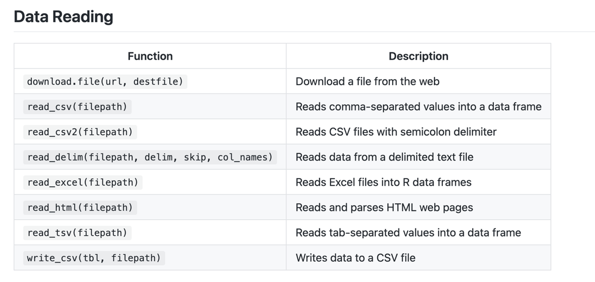
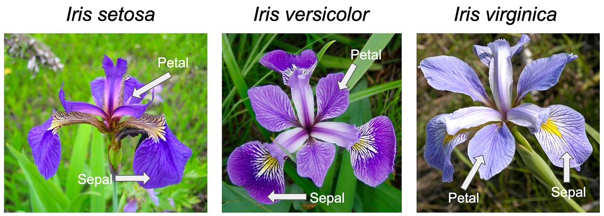

Midterm review: code, concepts & live practice
Welcome to the DSCI100 study social. Everything here runs in your browser, so bring your questions and start coding.
Move around
→ ← next / previous slide
Space next
Jump anywhere
M or the ☰ button: slide menu with every slide listed
Esc or O: overview grid
Home / End: first / last
Handy extras
F fullscreen
? all keyboard shortcuts
Typing into a code cell?
Reveal shortcuts are paused while your cursor is inside a code editor. Click outside the editor to use the arrow keys again.
Part 01
Code & Concepts
Data Science 100 is an introductory data science course. Its exams focus heavily on understanding the theory behind the code. We need to know the why, not just the how.
This is especially relevant because of the format of the exam. You do not have access to a code editor. Don’t stress about that too hard. This is to your advantage!
Pro move
Cmd/Ctrl + F the formula sheet. Whether the question is multiple choice, fill-in-the-blank, or short answer, search for the function name or a keyword from the question.
We can generally define a function as something that…

Every row of the formula sheet has the same anatomy:
Read the description first. It tells you what comes out, which is usually what the question is really asking.
Part 02
library(tidyverse)
irisFor the practice exercises we’ll use iris, a dataset that ships with base R. It has four measurements of two flower parts (sepal and petal) for three iris species.

read_csv(), read_csv2(), read_tsv(); read_delim() for custom delimiterscol_names = FALSE, skip = nlibrary(readxl) and read_excel()filter() vs select()filter() → chooses rowsselect() → chooses columnsCommon filter operators (find them on your formula sheet!)
==, !=>, <, >=, <=| (OR)%in% (matches any value in a vector)Try it
filter() and select()What do they get?
Both receive a dataframe, plus some additional information (a condition, or column names).
What do they do?
They specify the data of interest. select() chooses individual columns; filter() chooses rows that match a condition.
What do they return?
A dataframe that is smaller than the original.
filter() and select() in actionarrange() and slice()arrange() orders rows by column valuesslice() selects rows by row number or range: slice(1), slice(5), slice(1:5)Try it: top 3 longest petals
map()What does it get? A dataframe and a function.
What does it do? Applies a function to many columns.
What does it return? map() always returns a list. Use map_df() to get a tibble back.
Try it: mean of every numeric column
map_df() in actionmutate()mutate() creates new columns using existing columns, e.g. mutate(area = width * height).
It gets a dataframe, does whatever you tell it to, and returns the whole dataframe you gave it, plus the new column.
Try it
mutate() in actionUsing iris and the tidyverse, complete the four steps and assign your work to iris_wrangled.
Species is “virginica” and Sepal.Length is greater than 6Sepal.Length, Sepal.Width, and SpeciesSepal.Area = Length × WidthSepal.Area in descending order and slice to return 3 rowsHeads up: after arrange(desc(...)) the biggest areas come first, so slice(1:3) returns the 3 largest. For the 3 smallest, arrange ascending (drop desc()) and keep slice(1:3).
group_by() and summarize()Last semester, lots of students found these two functions quite confusing!
They’re used together in this course, but they’re easier to understand when we look at their anatomy separately.
group_by()What does it get?
A dataframe, and a column that specifies which categories to group your data by.
What does it do?
Puts your data into different groups using metadata.
What does it return?
What looks like the exact same dataframe. To the naked eye, group_by() does nothing on its own.
group_by()| species | height |
|---|---|
| giraffe | 500 cm |
| ant | 0.02 cm |
| ant | 0.01 cm |
| giraffe | 400 cm |
| giraffe | 300 cm |
animals| species | height |
|---|---|
| giraffe | 500 cm |
| ant | 0.02 cm |
| ant | 0.01 cm |
| giraffe | 400 cm |
| giraffe | 300 cm |
animals |> group_by(species)Same rows, same values, but R now remembers two groups: giraffe and ant.
summarize()What does it get?
A dataframe, grouped or ungrouped.
What does it do?
Calculates summary statistics, e.g. summarize(mean_height = mean(height)). If the data is grouped, it runs once per group; otherwise on the whole dataframe.
What does it return?
An entirely new dataframe containing only the summaries you asked for.
summarize()| species | height |
|---|---|
| giraffe | 500 cm |
| ant | 0.02 cm |
| ant | 0.01 cm |
| giraffe | 400 cm |
| giraffe | 300 cm |
| mean_height |
|---|
| 240.006 |
animal_stats <- animals |> summarize(mean_height = mean(height))group_by() |> summarize()| species | height |
|---|---|
| giraffe | 500 cm |
| ant | 0.02 cm |
| ant | 0.01 cm |
| giraffe | 400 cm |
| giraffe | 300 cm |
| species | mean_height |
|---|---|
| giraffe | 400 cm |
| ant | 0.015 cm |
animal_stats <- animals |> group_by(species) |> summarize(mean_height = mean(height))One row per group, and only the columns you asked for.
group_by() |> summarize()Uncomment part 2 and run again. Also try adding n = n() inside summarize().
Find the mean sepal length for each species of iris. Assign your answer to an object called mean_sepal_length.
Part 03
Code & Concepts
Match each question about the iris dataset to its type: Descriptive, Exploratory, Predictive, Inferential, Causal, Mechanistic.
| species | height |
|---|---|
| giraffe | 500 cm |
| ant | 0.02 cm |
| ant | 0.01 cm |
| giraffe | 400 cm |
| giraffe | 300 cm |
Consistent structure
Works with tidyverse functions
Easier to understand and analyze
Absolute paths
/Relative paths (preferred)
. (current) and .. (parent)Part 04
Choose it · refine it · explain it
Avoid…
Practice this next
In the next exercise, make the plot, then try explaining it out loud using these five steps.
Create a scatter plot of Petal.Length (x) vs Petal.Width (y). Color the points by Species. Use human-readable labels and give your plot a title. Assign your answer to iris_scatter.
Wow, don’t those look like clear clusters to you?
Part 05
Using databases, the tbl() function, and SQL
SQLite databases
.db)PostgreSQL databases
RPostgresdbConnect()dbListTables()tbl() to query datacollect()Key idea
tbl() translates R code into the associated SQL (structured query language) queriescollect() is runPart 06
Predicting a category from its neighbours
Recall our types of questions. K-NN is a classification problem, for which we ask predictive questions.
How does it work? Our goal is to predict a categorical label, using some features to assign a class.
tidymodelstidymodelsnearest_neighbor()fit()predict()Use your reference sheet!
The formula sheet has the full recipe → workflow → fit → predict pipeline. Search for nearest_neighbor.
What problem are we fixing?
After centering and scaling (standardization), all variables contribute fairly to the distance calculation, and therefore fairly to our classification.
Last week I found a new, pretty iris and measured its petals. What species is it? Use K-NN with Petal.Length and Petal.Width as predictors and 3 neighbours to predict the species of new_iris.
Step 0: install the modelling packages (one time, ~1-2 min)
tidymodels isn’t part of the tidyverse, so run this cell once and wait for it to finish.
library(tidymodels)
knn_spec_iris <- nearest_neighbor(weight_func = "rectangular", neighbors = 3) |>
set_engine("kknn") |>
set_mode("classification")
knn_recipe_iris <- recipe(Species ~ Petal.Width + Petal.Length, data = iris) |>
step_center(all_predictors()) |>
step_scale(all_predictors())
knn_fit_iris <- workflow() |>
add_model(knn_spec_iris) |>
add_recipe(knn_recipe_iris) |>
fit(data = iris)
predict(knn_fit_iris, new_iris)Run this cell to see where the new iris (the purple diamond) falls on the graph. Does your result make sense? Why or why not?
Part 07
Git & GitHub
Version control is a system for:
Git & GitHub
Git tracks changes locally. GitHub is a website that hosts repositories online.
Repositories
Local repository: your working copy. Remote repository: the shared online copy.
1. Stage / Add
Selects which specific file changes will be included in the next commit. It prepares your changes to be saved.
2. Commit
Creates a saved snapshot of your project at a specific point in time. This lets you go back to previous versions if something breaks.
3. Push
Sends your committed changes from your computer to a remote repository like GitHub. This updates the shared version of the project.
4. Pull
Downloads changes from the remote repository to your local computer.
Merge: combines changes from two branches.
Merge conflict: happens when the same code is edited differently, so Git can’t combine it automatically.
To resolve
6a. Define the following Git commands: commit, stage/add, push, pull.
6b. What’s the difference between Git and GitHub?
Write your answers on paper (or out loud), then open the model answer.
Commit: creates a saved snapshot of your project at a specific point in time, so you can go back to previous versions if something breaks.
Stage / Add: selects which file changes will be included in the next commit. It prepares your changes to be saved.
Push: sends your committed changes from your computer to a remote repository like GitHub, updating the shared version of the project.
Pull: downloads changes from the remote repository to your local computer, and merges them into your current work.
Git vs GitHub: Git is a version control tool that runs on your computer and tracks changes to files. GitHub is an online service that hosts Git repositories and helps people collaborate.
Part 08
Practice hub · next steps
You’ve got this. Go crush it.
WiDS@UBC · DSCI100 Study Social